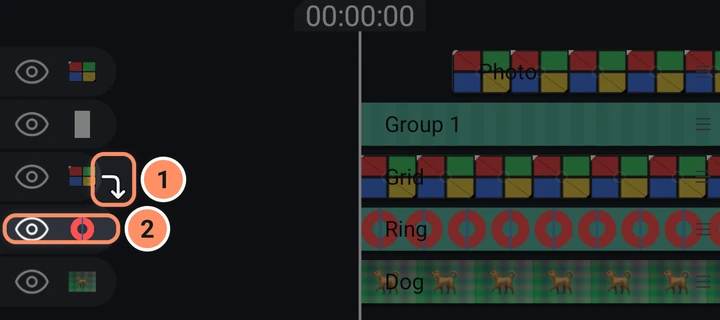

Hình dạng, vẽ và mặt nạ
Hình dạng, công cụ bút, vẽ tự do, nhập SVG, mặt nạ cắt, nhóm, lớp cha và mặt nạ hình dạng động.
Hình dạng
Thêm một hình dạng có sẵn từ tab Hình dạng trong Menu Thêm. Chọn hình rồi chạm Tùy chọn hình dạng để thay đổi. Mọi tùy chọn đều có thể tạo hoạt ảnh bằng keyframe.
- Bo tròn góc đứng đầu và bo tròn mọi góc của hình. Hình chữ nhật bo góc, Khung chú thích và Con dấu dùng bán kính góc riêng của chúng ở đây.
- Kích thước đặt chiều rộng và chiều cao.
- Tiếp theo là các tùy chọn riêng của hình, ví dụ răng của Bánh răng, khía và mũi nhọn của Trái tim, viền, camera và nút bên của Điện thoại, hoặc viền, thanh tiêu đề và lưới của Bảng. Các số đếm như răng, tia hay mũi nhọn thay đổi theo từng bước nguyên.
- Nâng cao mở các tùy chọn ít dùng hơn, như độ quét của Vòng hoặc số cột và hàng của Bảng.
Sửa điểm trong lưới công cụ biến hình thành các điểm bạn có thể di chuyển, giữ nguyên hình dáng lúc đó. Bo tròn góc vẫn hoạt động, và Hoàn tác đưa các tùy chọn trở lại. Nếu có tùy chọn đang có hoạt ảnh, ứng dụng sẽ hỏi trước. Chuyển thành đường viền trong menu lớp cũng làm như vậy. Hình vẽ bằng bút hoặc nhập từ SVG vẫn dùng Sửa điểm làm công cụ chính; Tùy chọn hình dạng của chúng có Bo tròn góc.
Các phiên bản AbsentMotion cũ hơn hiển thị những hình này như lúc bắt đầu lớp, không có các tùy chọn.
Màu và đường viền được thiết lập bằng Tô & màu và Viền & bóng. Xem Công cụ lớp.
Công cụ bút và Sửa điểm
Công cụ bút trong menu Thêm tạo một lớp hình dạng mới và mở trình chỉnh sửa điểm. Sửa điểm trong lưới công cụ mở nó cho một hình dạng đường dẫn hiện có. Trong bản xem trước, chạm để đặt một điểm; nhấn và kéo để kéo ra một tay nắm đường cong. Một điểm mờ hiển thị nơi điểm tiếp theo sẽ đáp xuống. Rời đi mà không vẽ gì sẽ xóa lớp mới.
Ở cuối trình chỉnh sửa:
- Đóng đường hoặc Mở đường (cần hai điểm trở lên).
- Làm điểm cong hoặc Làm điểm nhọn.
- Thêm điểm và Xóa điểm.
- Một trackpad di chuyển điểm đã chọn ("Kéo để di chuyển điểm"), và khi bạn chỉnh sửa tay nắm của một điểm mượt, các nút chuyển Góc và Khoảng cách khóa góc hoặc độ dài của nó.
- Đường viền với các mũi tên di chuyển giữa các đường dẫn con riêng biệt của một hình dạng.
- Một danh sách các điểm ở bên phải, với các ô nhỏ "+" giữa chúng để chèn một điểm.

Phần trên có Hoàn tác, Làm lại và Quay lại.
Hình dạng động (keyframe hình dạng)
Trong trình chỉnh sửa điểm, một thanh thời gian có Keyframe hình dạng trước, Keyframe hình dạng tiếp theo, Thêm keyframe hình dạng và Xóa keyframe hình dạng. Một keyframe hình dạng lưu toàn bộ hình dạng tại đầu phát. Di chuyển đến thời điểm khác, thay đổi các điểm, thêm một keyframe khác, và hình dạng sẽ chuyển động giữa chúng. Keyframe trước đó hiển thị dưới dạng một đường viền đứt nét mờ để giúp bạn căn chỉnh. Đây là cách bạn tạo mặt nạ động cho rotoscoping: theo dõi một đường viền xung quanh một thứ gì đó trong video và thay đổi nó khi video di chuyển.
Vẽ tự do
Cọ vẽ tự do trong menu Thêm tạo một lớp vẽ và mở trình chỉnh sửa vẽ.
- Bút vẽ một đường đều, Cọ thay đổi độ rộng đường theo áp lực, Tô biến một vòng khép kín bạn vẽ thành hình dạng được tô, và Tẩy xóa các phần.
- Một thanh trượt kích thước (1 đến 300), và một bộ chọn màu với dải màu và dải độ mờ.
- Hoàn tác và Làm lại ở trên cùng. Mỗi nét được giữ lại khi bạn nhấc ngón tay.
- Công cụ, kích thước và màu được ghi nhớ. Rời đi mà không vẽ gì sẽ xóa lớp mới.

Bản vẽ không có keyframe. Để tạo hiệu ứng động cho bản vẽ, hãy dùng các hiệu ứng như Tiến trình vẽ; xem Thư viện hiệu ứng.
Tệp SVG
Nhập SVG trong menu Thêm biến một hình ảnh vector thành hình dạng. Xem Menu Thêm để biết những gì được giữ lại.
Mặt nạ và cắt
- Tạo mặt nạ cắt (menu lớp) cắt một lớp theo hình dạng của lớp ngay bên dưới nó. Bỏ mặt nạ cắt hoàn tác việc đó. Trên dòng thời gian, lớp được cắt theo lớp khác hiển thị một mũi tên móc nhỏ ở cuối hàng của nó, chỉ xuống lớp mà nó được cắt theo.
- Nhóm & mặt nạ và Nhóm & cắt bỏ (chọn nhiều) nhóm các lớp và đặt chế độ hòa trộn của lớp trên cùng thành Mặt nạ hoặc Cắt bỏ. Bạn cũng có thể đặt chế độ hòa trộn Mặt nạ hoặc Cắt bỏ trên bất kỳ lớp nào trong Độ mờ. Mặt nạ chỉ giữ nội dung bên dưới ở nơi lớp đó có; Cắt bỏ cắt nó đi.
- Mặt nạ động đến từ keyframe hình dạng (ở trên).
- Xóa nền cho ảnh và video được mô tả trong Công cụ AI.

Nhóm và lớp cha
- Nhóm (chọn nhiều) đặt các lớp vào một lớp nhóm. Di chuyển, thu phóng, làm mờ và thêm hiệu ứng cho cả nhóm như một lớp. Xem Menu lớp và chọn nhiều.
- Một lớp cha (nút lớp cha trên thanh trên cùng) làm cho một lớp theo một lớp khác mà không cần nhóm. Các hiệu ứng Di chuyển Hỗ trợ lớp cha và Hỗ trợ tỷ lệ thay đổi cách lớp con đi theo lớp cha của nó: xem Sử dụng hiệu ứng.
- Một lớp Rỗng (Thêm, Đối tượng / Tài nguyên) là vô hình. Biến nó thành lớp cha của các lớp khác để di chuyển tất cả chúng cùng nhau, hoặc để theo dõi chuyển động di chuyển nó.
Sửa một nhóm
Chọn một nhóm và nhấn Sửa nhóm trong công cụ của nó để mở. Bên trong, dòng thời gian và bản xem trước chỉ hiển thị các lớp của nhóm đó, và bạn thay đổi chúng như mọi lớp khác. Bạn cũng có thể mở một nhóm nằm trong nhóm.
- Thanh trên cho biết bạn đang ở đâu: tên dự án, rồi tên của từng nhóm đang mở. Nhấn tên dự án để quay lại toàn bộ dự án, hoặc tên một nhóm để quay lại nhóm đó.
- Khi một lớp được chọn, một nhãn nhỏ có tên nhóm nằm cạnh tên lớp. Nhấn vào nhãn để thoát khỏi nhóm.
- Khi không chọn gì, nút Quay lại của điện thoại thoát khỏi nhóm bạn đang ở.
- Biểu tượng bánh răng mở cài đặt của nhóm bạn đang ở. Chỉ có một cài đặt, Đổi thời gian: xem bên dưới.
Một nhóm được liên kết với tài nguyên sẽ mở bằng Thuộc tính tài nguyên thay thế: để thay đổi các lớp của nó, hãy mở tài nguyên gốc hoặc dùng Hủy liên kết với tài nguyên trước (xem Tài nguyên, mẫu và preset). Không thể mở đoạn cắt video được tạo bằng Xóa nền (video).
Đổi thời gian của nhóm
Đổi thời gian quyết định nội dung được phát khi clip nhóm dài hơn hoặc ngắn hơn các lớp bên trong. Mở nhóm (Sửa nhóm), nhấn bánh răng rồi chọn:
- Tắt (mặc định): các lớp phát theo tốc độ riêng và dừng ở nơi chúng kết thúc.
- Đóng băng: khung hình cuối của phần giữa được giữ trên màn hình.
- Kéo giãn: các lớp chậm lại hoặc nhanh lên để lấp đầy clip nhóm.
- Lặp: các lớp phát lại từ đầu.
- Lặp và kéo giãn: các lớp lặp lại một số nguyên lần, được kéo giãn một chút để lấp vừa khít clip.
- Trống: không hiển thị gì sau khi các lớp kết thúc.
Bên trong nhóm, menu sao chép và dán còn có Đặt kết thúc phần mở đầu và Đặt bắt đầu phần kết. Chúng đặt cờ vàng trên thước: phần trước điểm kết thúc phần mở đầu và sau điểm bắt đầu phần kết giữ tốc độ thật, còn phần giữa được kéo giãn, lặp hoặc đóng băng.

Để hiển thị một khung hình đã chọn của nhóm thay vào đó, hãy dùng Khung hình trong công cụ của nó: xem Công cụ lớp.
Bỏ nhóm
Bỏ nhóm trong menu lớp của một nhóm đưa các lớp của nó trở lại dự án, đúng chỗ chúng ở trên dòng thời gian và trên màn hình. Nếu nhóm có hiệu ứng, tốc độ, độ mờ hoặc chế độ hòa trộn riêng, ứng dụng cảnh báo rằng những thứ này sẽ bị gỡ trước khi bỏ nhóm. Hoàn tác sẽ đưa nhóm trở lại.